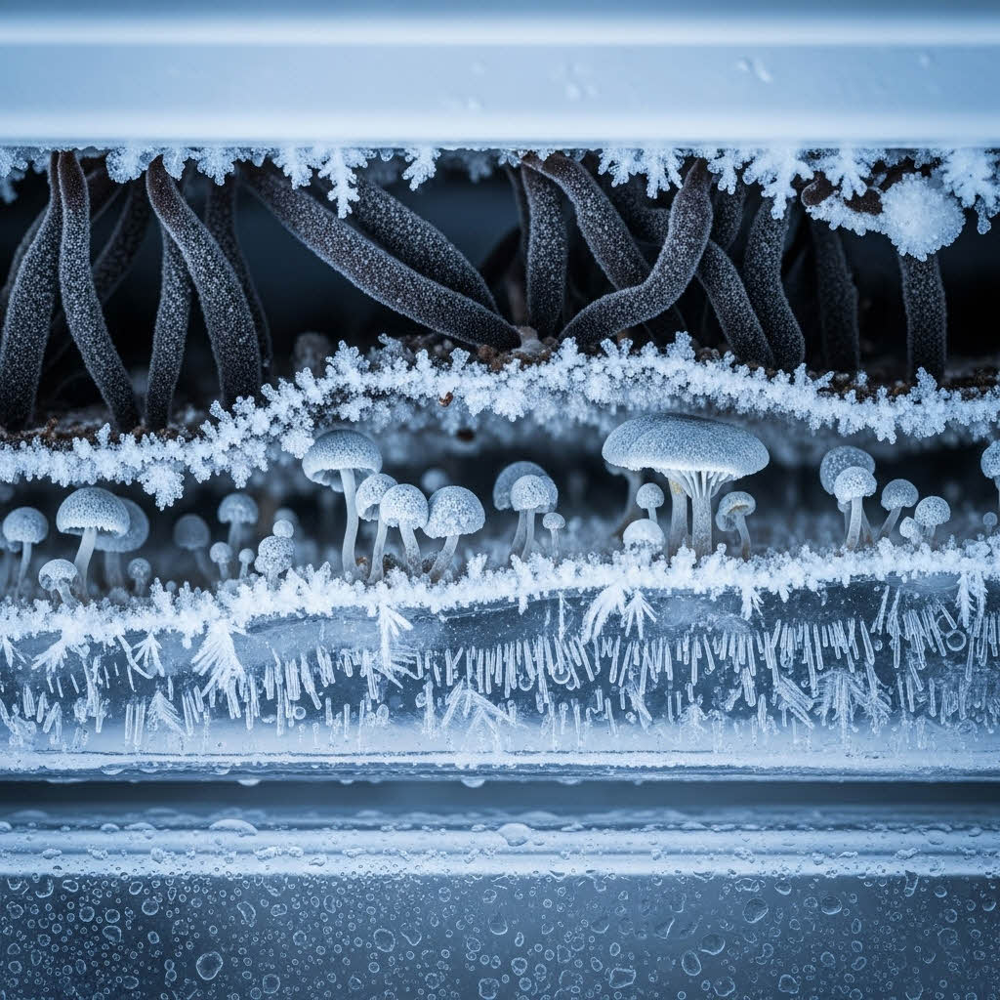
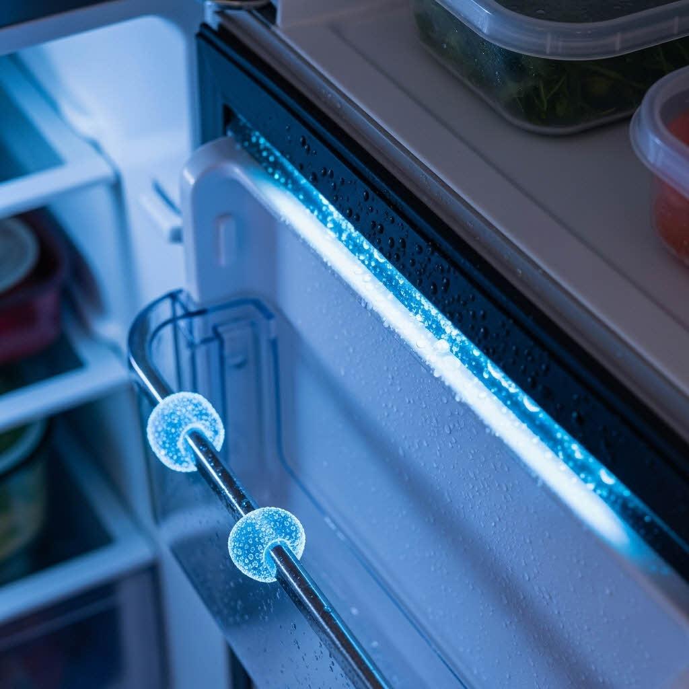
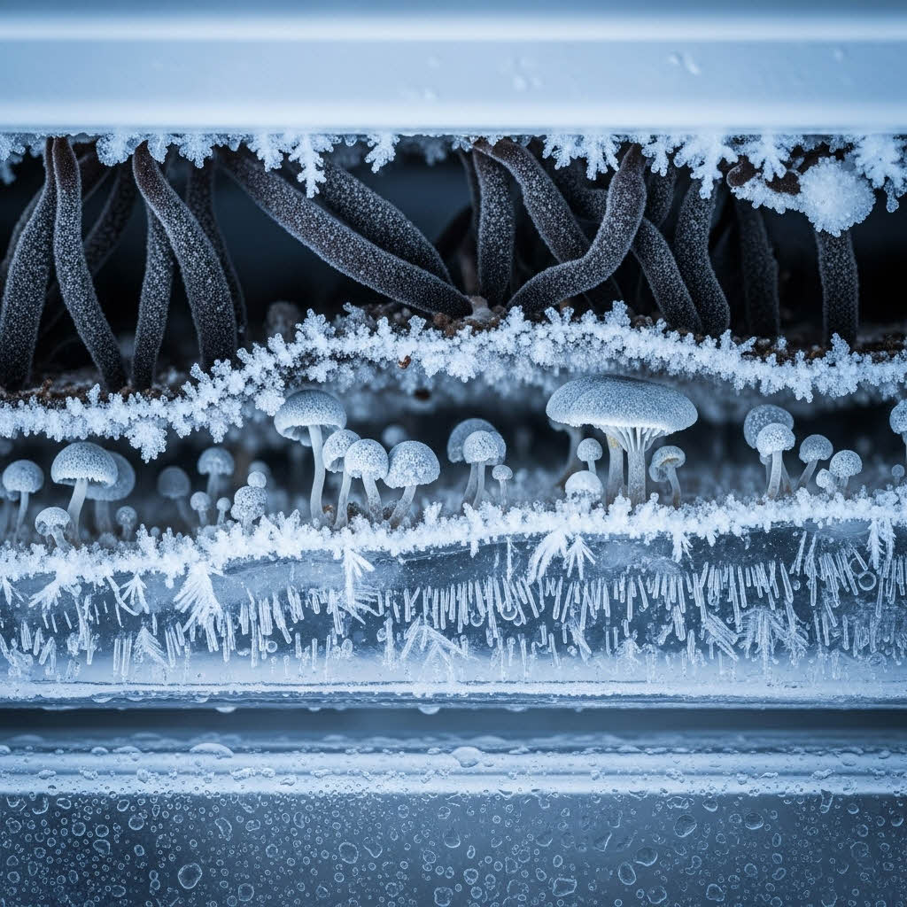
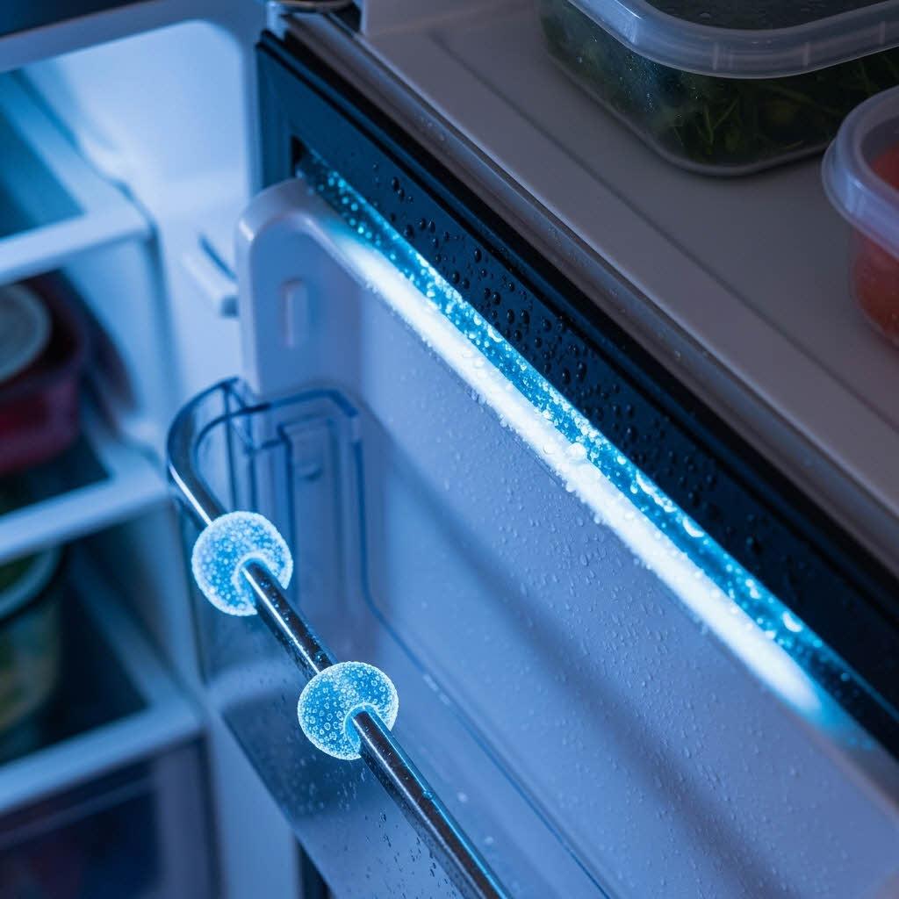
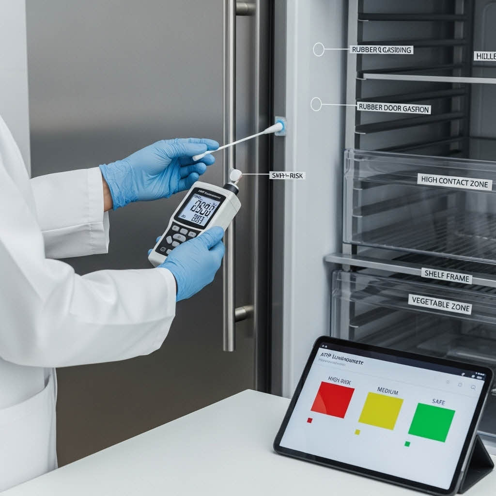
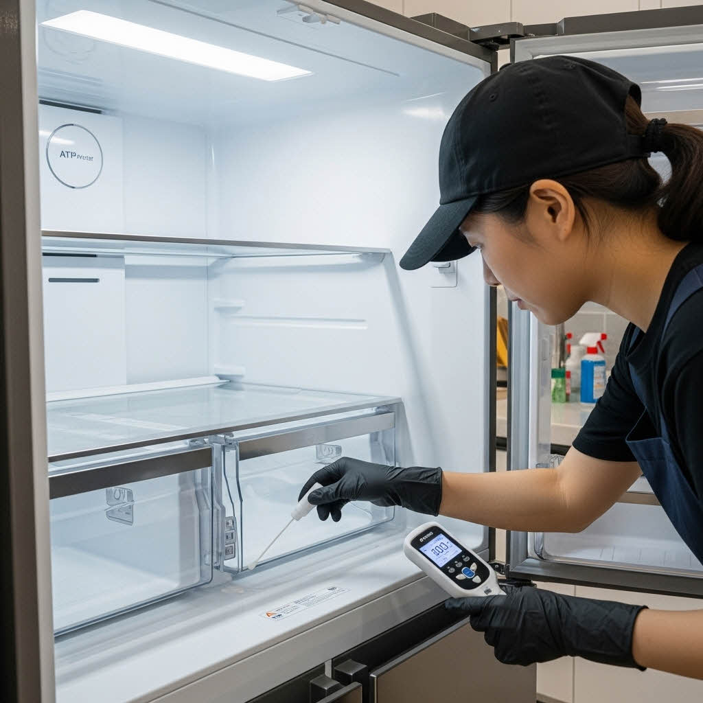

기업 환경에서 공용 냉장고의 위생 상태는 직원들의 건강과 직결됩니다. 아래 체크리스트는 냉장고 위생 상태를 스스로 평가하고, 전문적인 정기 관리가 필요한 시점을 정확히 파악하는 데 사용됩니다.
냉장고 위생 체크리스트
기업 내 공용 냉장고는 하루에 수십~수백 회 개폐되며, 다양한 음식물과 용기가 드나드는 고위험 위생 구역입니다. 많은 사람이 사용하는 특성상, 냉장고 내부는 세균과 곰팡이가 빠르게 번식하기 위한 최적 조건을 갖추게 됩니다.
내부의 잦은 온도 변화, 식품 수분, 사용자 손 접촉 등은 교차 오염을 지속적으로 유발하며, 이는 사내 감염 위험 증가 및 식중독의 주요 원인이 됩니다. 특히 다음과 같은 문제가 현장에서 일반적으로 발견됩니다.

 




실제 현장에서 발견되는 냉장고 오염 사례
단순한 내부 닦기 수준의 관리로는 이러한 근본적인 오염 문제를 해결할 수 없습니다. 기업은 직원 복지 향상, 위생 리스크 감소, 감염 예방을 위해 전문적인 주기 관리가 필수적입니다.냉장고 내부 오염은 다음 요소들이 복합적으로 작용하여 발생하며, 클린메이트의 전문 관리가 가장 높은 RLU 수치를 기록하는 주요 오염 부위를 정확히 진단합니다.
클린메이트는 제조사별 구조 특성을 기반으로, 단순 표면 청소가 아닌 정밀 분해·살균·건조·재조립의 5단계 전문 프로세스를 적용하여 근본적인 위생 문제를 해결합니다.
ATP 측정기를 활용해 손잡이·패킹·선반 프레임 등 고접촉 구역의 오염도를 객관적인 수치(RLU)로 측정합니다. 초기 오염도와 최종 개선도를 고객사에 데이터로 제공하여 과학적인 위생 관리가 가능하도록 하며, 위험 기준치 초과 항목을 별도 표시하여 집중 관리합니다.
선반, 패킹, 서랍, 냉동칸 구성품 등 탈부착 가능 항목을 모두 분리합니다. 보이지 않는 틈새, 물이 고이는 구간, 패킹 내부 틈 등 세균이 은폐되는 구역을 정확히 식별하며, 부품별 오염 레벨을 기록하여 다음 소독 단계에 반영합니다.

식품 안전 인증을 받은 친환경 소독제를 사용하여 살균을 진행합니다. 곰팡이, 바이오필름, 기름때, 음식물 잔여물이 집중 분포된 지점을 중심으로 살균하며, 내부 벽면·도어 패널·선반 결착부 등 공조가 어려운 지점까지 수기 및 장비 혼합 방식으로 작업합니다.

냄새 요소(부패균 및 단백질 잔여물)를 분해하여 내부 공기질을 개선합니다. 항균 자외선을 추가 적용하여 일정 기간 동안 세균 재번식을 억제하고, 관리 주기 중 발생할 수 있는 악취 재발 현상을 최소화합니다.

작업 완료 후 동일 지점을 재측정하여 개선 수치를 비교합니다. 작업 전/후 사진, ATP 데이터, 권장 관리 주기 등이 포함된 보고서를 제공하며, 관리 이력 데이터는 향후 정기 관리 주기 추천에 활용됩니다.
기업의 규모, 사용 패턴, 냉장고 수량에 따라 가장 효율적인 전문 관리 주기를 권장합니다.
정기적인 전문 관리 후 기업은 단순한 청결 유지를 넘어, 다음과 같은 실질적인 개선 효과를 얻을 수 있습니다.
기업 위생 관리에서 냉장고는 세균 번식률, 접촉 빈도, 식품 오염 영향 측면에서 위험도가 매우 높은 장비입니다. 클린메이트의 전문 분해·살균 기반 정기 관리를 통해 기업은 직원 건강 보호, 감염 예방, 냉장 기능 정상화, 회사 이미지 제고 등 다방면의 효과를 동시에 얻을 수 있습니다.